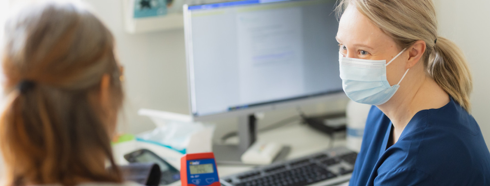

Terveyspalvelut
Terveyspalvelut Keski-Suomen hyvinvointialueella.

Keski-Suomen hyvinvointialue vastaa alueen sosiaali- ja terveyspalveluista sekä pelastuspalveluista.
Asiointikanavat, kuten terveyskeskukset ja puhelinnumerot, löydät linkitettynä kunkin palvelun kuvaukseen.
Verkkopalveluihimme pääset kirjautumaan Asioi verkossa -sivultamme.
Terveyspalvelut Keski-Suomen hyvinvointialueella.
Tältä sivulta löydät Keski-Suomen hyvinvointialueen tarjoamat sosiaalipalvelut.
Mielenterveys- ja riippuvuuspalvelut Keski-Suomen hyvinvointialueella.
Perheiden palvelut Keski-Suomen hyvinvointialueella.
Nuorten palvelut Keski-Suomen hyvinvointialueella.
Ikääntyneiden palvelut Keski-Suomen hyvinvointialueella.
Tältä sivulta löydät Keski-Suomen hyvinvointialueen sairaalapalvelut sekä Sairaala Novan erikoisalat.
Hyvinvointialue järjestää lakisääteisen työterveyshuollon alueellaan sijaitsevissa työpaikoissa työskenteleville työntekijöille sekä alueellaan toimiville yrittäjille ja maatalousyrittäjille.
Vammaisten palvelut Keski-Suomen hyvinvointialueella.
Keski-Suomen hyvinvointialue vastaa pelastustoimesta Keski-Suomen alueella 1.1.2023 alkaen. Pelastuspalvelujen tiedot löydät valtakunnalliselta pelastustoimi.fi -sivustolta.